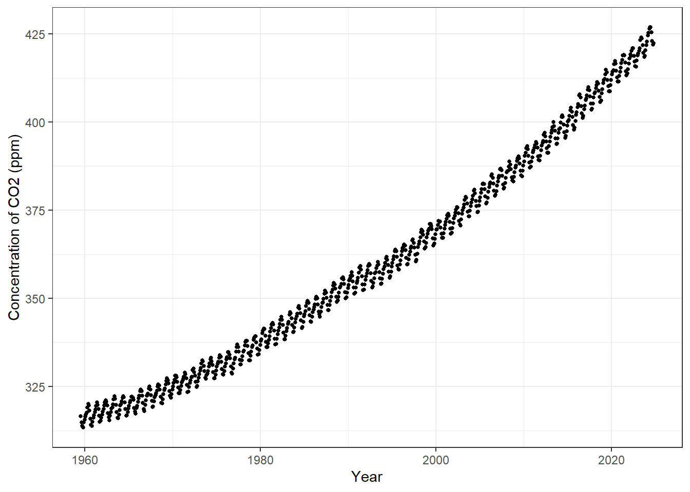
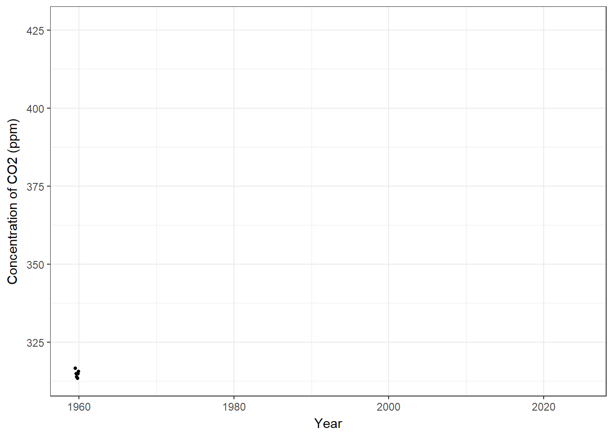
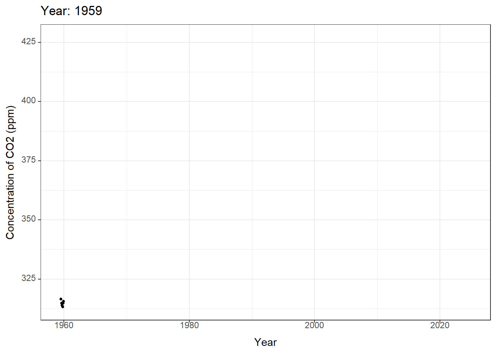
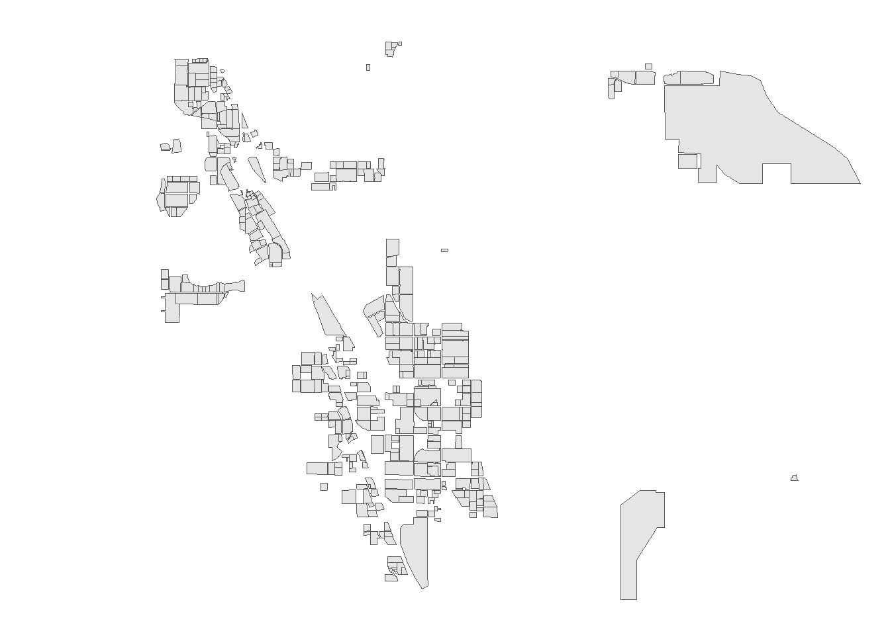
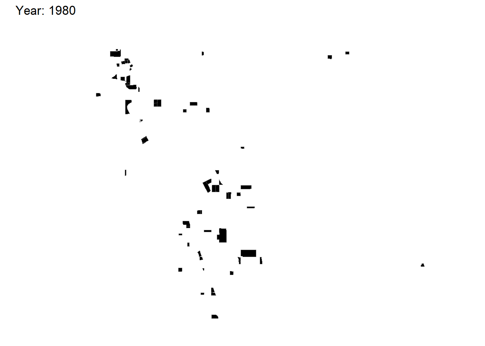
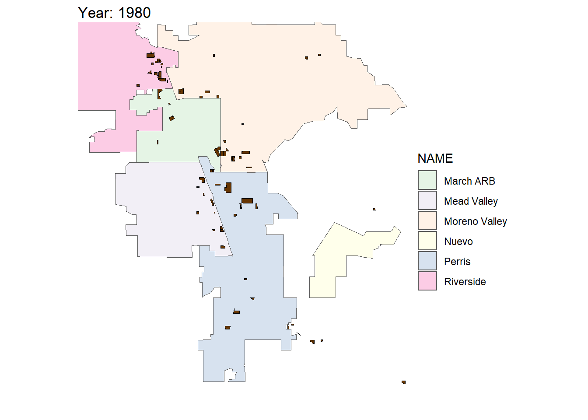

install.packages('gganimate')
install.packages('gifski') # Note that gifski may require other dependencies such as a Rust installation. 24 Animations - Two ways
Today we focus on animating visualizations in R
24.1 Animations
Visualizations that include movement are a another way of creating salience. However, a bad animation doesn’t add anything to the visualization and just requires more time to view the same information than a good visualizationn.
First, let’s show a couple of examples using gganimate which works to extend the grammar of ggplot2. Then we will also show a couple of examples using shiny and its sliderInput() animation.
24.2 Packages and libraries
Install gganimate and gifski. Apple computers may default to image-magick, but I can’t test that.
Load libraries used for visualization today.
── Attaching core tidyverse packages ──────────────────────── tidyverse 2.0.0 ──
✔ dplyr 1.1.4 ✔ readr 2.1.5
✔ forcats 1.0.0 ✔ stringr 1.5.1
✔ ggplot2 3.5.1 ✔ tibble 3.2.1
✔ lubridate 1.9.3 ✔ tidyr 1.3.1
✔ purrr 1.0.2
── Conflicts ────────────────────────────────────────── tidyverse_conflicts() ──
✖ dplyr::filter() masks stats::filter()
✖ dplyr::lag() masks stats::lag()
ℹ Use the conflicted package (<http://conflicted.r-lib.org/>) to force all conflicts to become errorsLinking to GEOS 3.12.1, GDAL 3.8.4, PROJ 9.3.1; sf_use_s2() is TRUE
24.3 gganimate
24.3.1 Contrived example - Keeling Curve at Mauna Loa
In Lecture 1 we plotted the growing concentration of CO2 at Mauna Loa, the famous Keeling Curve.
Let’s revisit that.
First, import the data from NOAA CMDL.
#read raw data
co2 <- read_table('https://www.gml.noaa.gov/webdata/ccgg/trends/co2/co2_mm_mlo.txt',
skip = 57 )
#fix column headers
fieldNames <- c('year', 'month', 'decDate', 'meanCO2', 'trendedCO2', 'days', 'stdev', 'unc')
colnames(co2) <- fieldNames
# check dataset back rows
tail(co2)# A tibble: 6 × 8
year month decDate meanCO2 trendedCO2 days stdev unc
<dbl> <dbl> <dbl> <dbl> <dbl> <dbl> <dbl> <dbl>
1 2024 5 2024. 427. 424. 29 0.76 0.27
2 2024 6 2024. 427. 424. 20 0.65 0.28
3 2024 7 2025. 426. 425. 24 0.69 0.27
4 2024 8 2025. 423. 425. 22 1.08 0.44
5 2024 9 2025. 422. 425. 18 0.41 0.18
6 2024 10 2025. 422. 426. 22 0.35 0.14Next, let’s create a relatively simple visualization of the Keeling Curve using ggplot2. Figure 24.1 shows the result.
ggplot(data = co2, aes(x = decDate, y = meanCO2)) +
geom_point(color = 'black', size = 1) +
theme_bw() +
labs(x = 'Year', y = 'Concentration of CO2 (ppm)', 'Keeling Curve @ Mauna Loa')

24.3.2 Add in the animation steps
In many environmental data sets, we will want to show changes over time. gganimate has a built-in function for time animations called [transition_time()](https://gganimate.com/reference/transition_time.html).
Let’s do the most super-basic animation and add that function to the Keeling Curve visualization. Figure 24.2 shows the most basic animation when adding a time increment.
ggplot(data = co2, aes(x = decDate, y = meanCO2)) +
geom_point(color = 'black', size = 1) +
theme_bw() +
labs(x = 'Year', y = 'Concentration of CO2 (ppm)', 'Keeling Curve @ Mauna Loa') +
transition_time(year) # This step adds the by year animation.

Pretty cool, but we don’t see the old data so it looks just like a migrating flock of points. If we want to show other points along the graph, we can use shadow_mark() to show other points along the graph. Arguments for past and future allow us to choose include either or both of those points.
shadow_mark(past = TRUE, future = FALSE, ..., exclude_layer = NULL)
Figure 24.3 shows the result, while adding in a color argument to shadow_mark to show the old data differently.
ggplot(data = co2, aes(x = decDate, y = meanCO2)) +
geom_point(color = 'black', size = 1) +
theme_bw() +
labs(x = 'Year', y = 'Concentration of CO2 (ppm)',
title = 'Year: {frame_time}') +
transition_time(year) +
shadow_mark(past = TRUE, color = 'gray') # this leaves behind the animated data already shown. Feel free to choose a different color.Pretty close, but that Year title is horrible and the ten significant figures past the decimal point is very aesthetically displeasing. I must fix that using the round() function.
The interesting thing about that curly bracket notation is it can deal with variables and code directly. So let’s modify that directly.
Figure 24.4 shows the fixed title.
ggplot(data = co2, aes(x = decDate, y = meanCO2)) +
geom_point(color = 'black', size = 1) +
theme_bw() +
labs(x = 'Year', y = 'Concentration of CO2 (ppm)',
title = 'Year: {round(frame_time, 0)}') + # the rounded value of the year is inserted here, with zero to make it an integer.
transition_time(year) +
shadow_mark(past = TRUE, color = 'grey')

24.3.3 Example 2: Animating a ggplot map
Import warehouse data for Riverside County only - let’s limit the scope.
WH.url <- 'https://raw.githubusercontent.com/RadicalResearchLLC/WarehouseMap/main/WarehouseCITY/geoJSON/comboFinal.geojson'
warehouses <- st_read(WH.url) |>
filter(county == 'Riverside County') |>
st_transform(crs = 4326)Reading layer `comboFinal' from data source
`https://raw.githubusercontent.com/RadicalResearchLLC/WarehouseMap/main/WarehouseCITY/geoJSON/comboFinal.geojson'
using driver `GeoJSON'
Simple feature collection with 9084 features and 8 fields
Geometry type: MULTIPOLYGON
Dimension: XY
Bounding box: xmin: -118.8037 ymin: 33.43325 xmax: -114.4085 ymax: 35.55527
Geodetic CRS: WGS 84head(warehouses)Simple feature collection with 6 features and 8 fields
Geometry type: MULTIPOLYGON
Dimension: XY
Bounding box: xmin: -117.6015 ymin: 33.8773 xmax: -117.5314 ymax: 33.97265
Geodetic CRS: WGS 84
apn shape_area category year_built class
1 115050036 343900 Existing 2000 warehouse/dry storage
2 115060057 206900 Existing 1980 warehouse/dry storage
3 115670012 71800 Existing 1999 warehouse/dry storage
4 144010064 93200 Existing 2018 warehouse/dry storage
5 144010070 206100 Existing 2018 warehouse/dry storage
6 144010076 190000 Existing 1980 warehouse/dry storage
county unknown place_name geometry
1 Riverside County FALSE Corona MULTIPOLYGON (((-117.5428 3...
2 Riverside County TRUE Corona MULTIPOLYGON (((-117.5533 3...
3 Riverside County FALSE Corona MULTIPOLYGON (((-117.5314 3...
4 Riverside County FALSE Eastvale MULTIPOLYGON (((-117.5946 3...
5 Riverside County FALSE Eastvale MULTIPOLYGON (((-117.6003 3...
6 Riverside County TRUE Eastvale MULTIPOLYGON (((-117.5962 3...Make a basic warehouse map near my house using ggplot and geom_sf. Figure 24.5 shows a basic map of warehouses in ggplot.
ggplot(data = warehouses) +
geom_sf() +
coord_sf(xlim = c(-117.35, -117.1),
ylim = c(33.8,33.95), crs = 4326) +
theme_void()

Let’s animate it. We’ll add a second step to control the animation speed and frames. First, we add transition_time() and shadow_mark() in a way identical to our CO2 figure.
Pass the ggplot code chunk into a variable. This variable is then run through an animate() function to control the frame rate and number of frames displayed.
Figure 24.6 shows the time series animation.
data4map <- ggplot(data = warehouses) +
geom_sf(fill = 'black') +
coord_sf(xlim = c(-117.35, -117.1),
ylim = c(33.8,33.95), crs = 4326) +
theme_void() +
transition_time(year_built) + # new line to animate by year_built
shadow_mark(past = TRUE, color = 'grey20', fill = 'grey') + # new line to leave built warehouses as grey blocks
labs(title = 'Year: {round(frame_time, 0)}') # new title for figure showing the rounded year year
animate(data4map, nframes = 46, fps = 3, end_pause = 10) # this is a wrapper to control the speed of the animation.

Excellent! We can also add an underlying map of jurisdictions or a tile layer to make it a bit prettier.
Let’s use tigris places function to add some jurisdictions.
library(tigris)
#read the data
Riverside_places <- places(state = 'CA', cb = T, #pull for California, lower detail level
year = 2022,
progress_bar = FALSE) |>
filter(NAME %in% c('Moreno Valley', 'Mead Valley', 'March ARB', 'Perris', 'Riverside', 'Nuevo')) |>
st_transform(crs = 4326)
head(Riverside_places)Simple feature collection with 6 features and 12 fields
Geometry type: MULTIPOLYGON
Dimension: XY
Bounding box: xmin: -117.5239 ymin: 33.71387 xmax: -117.0883 ymax: 34.01935
Geodetic CRS: WGS 84
STATEFP PLACEFP PLACENS AFFGEOID GEOID NAME
1 06 62000 02410965 1600000US0662000 0662000 Riverside
2 06 52624 02408960 1600000US0652624 0652624 Nuevo
3 06 45680 02408176 1600000US0645680 0645680 March ARB
4 06 46646 02583077 1600000US0646646 0646646 Mead Valley
5 06 56700 02411403 1600000US0656700 0656700 Perris
6 06 49270 02411159 1600000US0649270 0649270 Moreno Valley
NAMELSAD STUSPS STATE_NAME LSAD ALAND AWATER
1 Riverside city CA California 25 210174364 797658
2 Nuevo CDP CA California 57 17531432 0
3 March ARB CDP CA California 57 30946983 36554
4 Mead Valley CDP CA California 57 49432252 0
5 Perris city CA California 25 81748619 279334
6 Moreno Valley city CA California 25 132891703 546511
geometry
1 MULTIPOLYGON (((-117.5238 3...
2 MULTIPOLYGON (((-117.1695 3...
3 MULTIPOLYGON (((-117.3194 3...
4 MULTIPOLYGON (((-117.3313 3...
5 MULTIPOLYGON (((-117.2627 3...
6 MULTIPOLYGON (((-117.2965 3...And this chapter from the ggplot2 book is much better than my lecture on color - please review.
data4map2 <- ggplot() +
geom_sf(data = Riverside_places, aes(fill = NAME), alpha = 0.2) +
geom_sf(data = warehouses, color = 'black', fill = '#653503',
inherit.aes = FALSE) +
coord_sf(xlim = c(-117.35, -117.1),
ylim = c(33.7,33.95), crs = 4326) +
theme_void() +
transition_time(year_built) +
shadow_mark(past = TRUE, color = '#653503', fill = 'grey') +
labs(title = 'Year: {round(frame_time, 0)}') +
scale_fill_brewer(palette = 'Accent')
animate(data4map2, nframes = 47, fps = 3, end_pause = 10)

It could still be better adding roads and rail and other features and making the colors less ridiculous, but this is a good enough example for today.
24.4 Animations in Shiny using sliderInput()
24.4.1 Example 3 - Animate Old Faithful Histogram
Create a new shiny App called ‘animate.R’ as shown in Section 19.3.2.
This should create a new Shiny App using the Old Faithful Geyser data. We’re going to animate this using the following argument within the sliderInput() function.
animate = TRUE.
The code chunk within the app should look like this, starting at line 21 on my machine:
sliderInput("bins",
"Number of bins:",
min = 1,
max = 50,
value = 30,
# NEW ARGUMENT HERE!
animate = TRUE)If we run the app by pressing the Run App button, a shiny App should pop-up. I’ll show that within the Shiny App. A blue play button will appear on the bottom-right of the slider. Pressing the play button advances through the slider increments and updates the histogram.
Easy!
There are additional options for controlling the interval rate and whether it loops.
We can modify the code to show that.
sliderInput("bins",
"Number of bins:",
min = 1,
max = 50,
value = 30,
# NEW ARGUMENT HERE!
animate = animationOptions(
loop = TRUE, interval = 300)
)